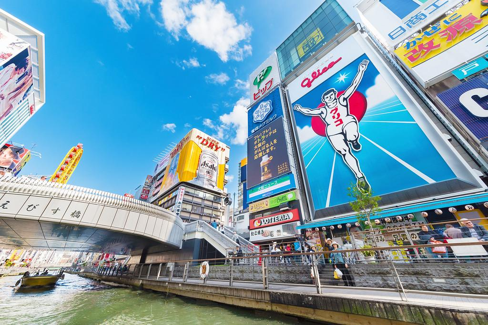
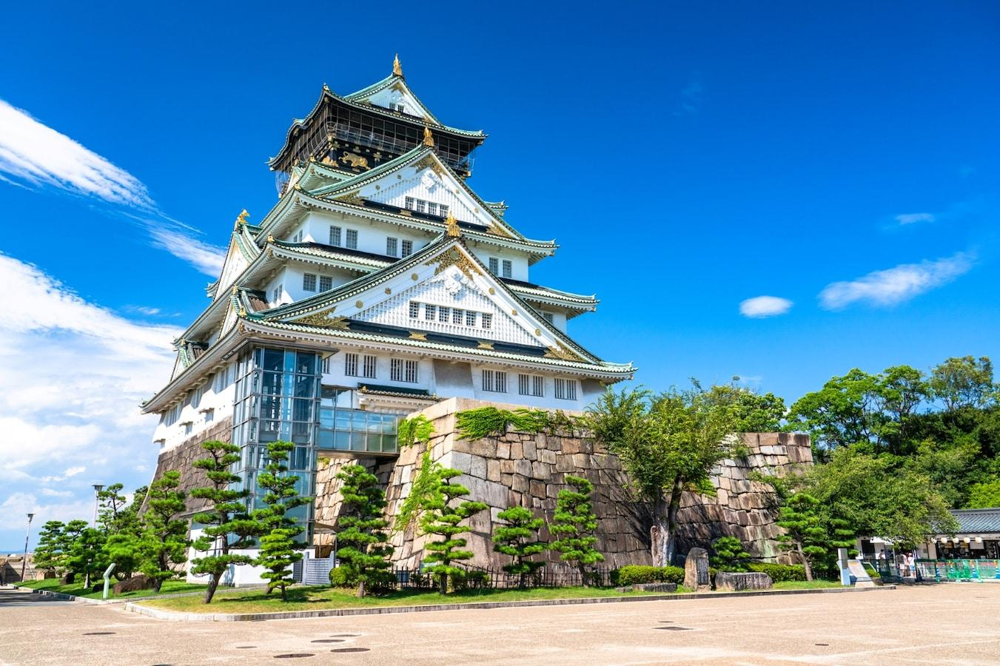

探索大阪 Osaka
充滿美食、娛樂與歷史文化的城市
歡迎來到大阪
大阪是日本關西地區的代表性城市， 以熱鬧的街道、豐富的美食 和歷史悠久的建築聞名。
大阪熱門景點

道頓堀
大阪著名的美食街， 可以品嚐章魚燒、大阪燒等料理。

大阪城
大阪著名的歷史建築， 周圍有美麗的大阪城公園。
大阪一日遊推薦行程
選擇你想探索的時間：
白天行程
09:00 大阪城公園
12:00 大阪特色午餐
14:00 心齋橋購物
大阪景點旅遊資訊
| 景點名稱 | 景點特色 | 建議停留時間 |
|---|---|---|
| 大阪城 | 歷史建築 | 1～2 小時 |
| 道頓堀 | 美食與購物 | 2～3 小時 |
| 心齋橋 | 購物商圈 | 1～2 小時 |
更多大阪旅遊資訊
想了解更多大阪景點與旅遊活動， 可以參考大阪官方旅遊網站。
前往大阪官方旅遊網站